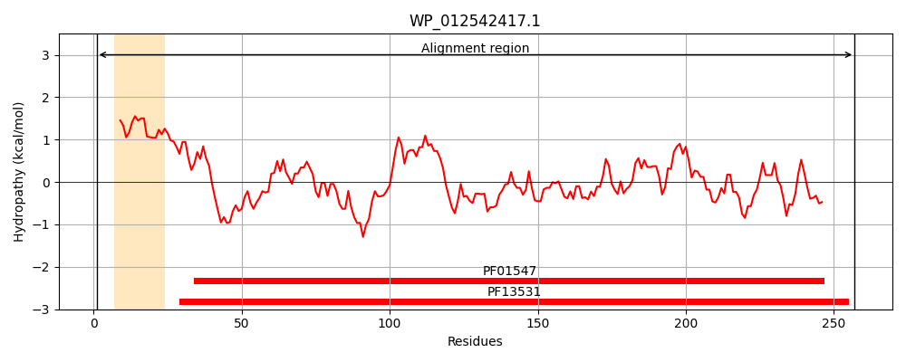
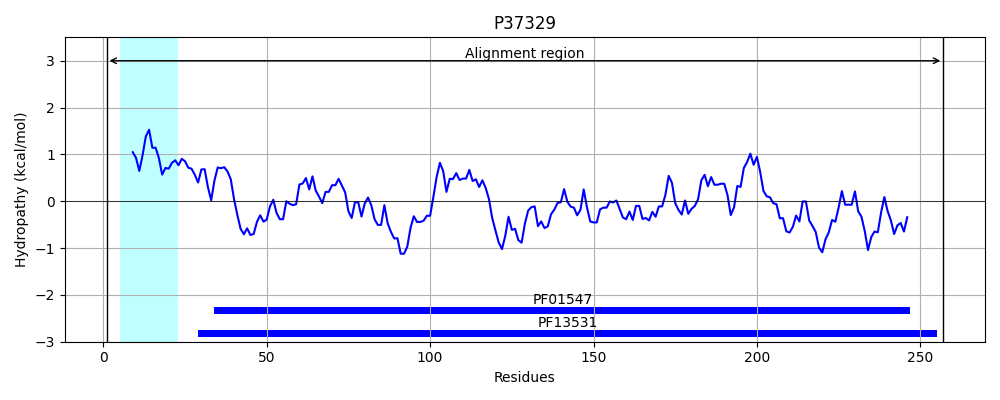
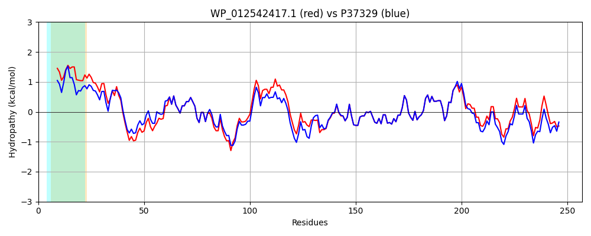

Hit Accession: P37329
Hit TCID: 3.A.1.8.1
Hit Description: gnl|BL_ORD_ID|10093 gnl|TC-DB|P37329|3.A.1.8.1 Molybdate-binding periplasmic protein precursor - Escherichia coli.
Mach Len: 257
e:0.000000
Query TMS Count : 1
Hit TMS Count: 1
TMS-Overlap Score: 0.850000
Predicted Substrates:CHEBI:6967;molybdate
BLAST Alignment:
Score: 1077 , Bit scores: 419 bits, E-value: 2.2e-150, Alignment length: 257, Percentage identity: 83
Query: 1 MAGSWLRGVIGVSLTLCVAGQALAAEGKVTVFAAASLTNAMQDIAQAYKKEKNVDVVSSFASSSTLARQIEAGAPADLFISADQKWMDYAADKKAIDPATRATLLGNSLVVVAPKASAQGAITIDEKTDWTSLLKGGRLAVGDPQHVPAGIYAKEALQKLGAWETLSPKLAPAEDVRGALALVERNEAPLGIVYGSDAVASKGVKVVGTFPEASHQKVEYPLAIVDGHRNAAVSAFYDYLKGPEASAIFKRYGFTTR 257
MA WL G +L+ VAG ALA EGK+TVFAAASLTNAMQDIA +KKEK VDVVSSFASSSTLARQIEAGAPADLFISADQKWMDYA DKKAID ATR TLLGNSLVVVAPKAS Q TID KT+WTSLL GGRLAVGDP+HVPAGIYAKEALQKLGAW+TLSPKLAPAEDVRGALALVERNEAPLGIVYGSDAVASKGVKVV TFPE SH+KVEYP+A+V+GH NA V AFYDYLKGP+A+ IFKRYGFT +
Sbjct: 1 MARKWLNLFAGAALSFAVAGNALADEGKITVFAAASLTNAMQDIATQFKKEKGVDVVSSFASSSTLARQIEAGAPADLFISADQKWMDYAVDKKAIDTATRQTLLGNSLVVVAPKASVQKDFTIDSKTNWTSLLNGGRLAVGDPEHVPAGIYAKEALQKLGAWDTLSPKLAPAEDVRGALALVERNEAPLGIVYGSDAVASKGVKVVATFPEDSHKKVEYPVAVVEGHNNATVKAFYDYLKGPQAAEIFKRYGFTIK 257 | Protein Hydropathy Plots: |
|---|
|  |  |
Pairwise Alignment-Hydropathy Plot:
|
|---|
|  |